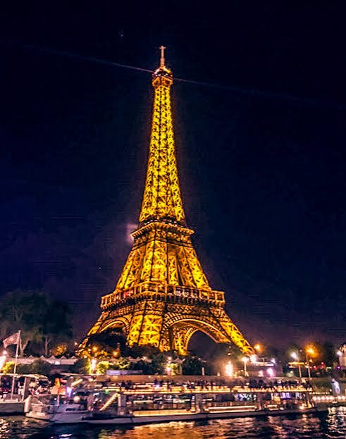
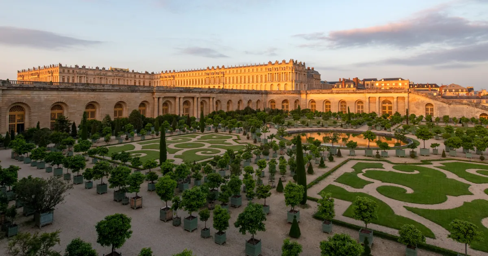
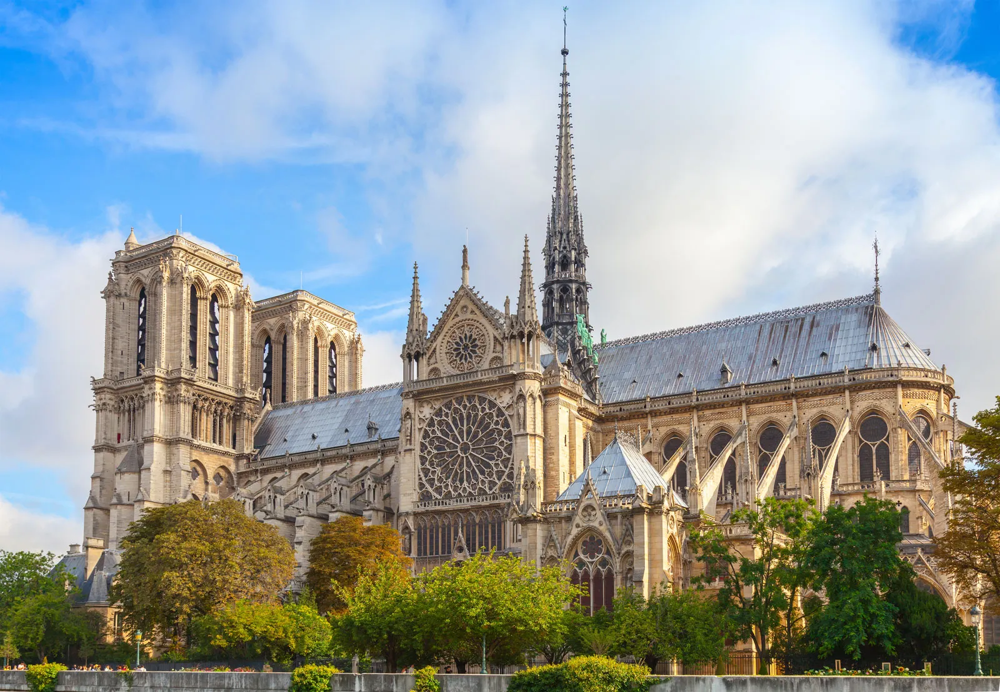

← Back to Europe
France
Explore three historic landmarks from France.

Eiffel Tower
Paris
Constructed for the 1889 World’s Fair marking the centenary of the French Revolution, this 330-meter wrought-iron lattice tower was initially mocked by Parisian artists. Its value as a radio telegraphy station helped save it, and it became France’s emblem of modern ingenuity.

Palace of Versailles
Versailles
King Louis XIV transformed a hunting lodge into a baroque palace in the late 17th century, centralizing royal power in its Hall of Mirrors. In 1789, bread riots marched to its gates; in 1919, its halls hosted the treaty ending World War I.

Notre-Dame Cathedral
Paris
Begun in 1163 on the Île de la Cité, this Gothic masterpiece witnessed royal coronations, Napoleon’s self-crowning, and the liberation of Paris in 1944. Its restoration after the April 2019 fire renewed a landmark at the spiritual heart of France.